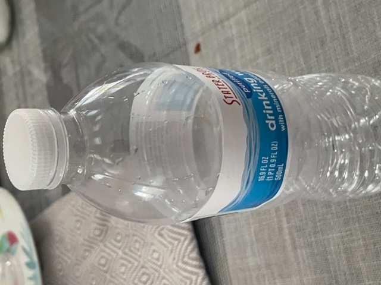

CASE STUDY BETWEEN GOOGLE LENS AND MOBILNET
GOOGLE LENS
VS
Mobilenet
Test image


result -
google lens: it is bottled water
mobil net: 50/50 chance it is water bottle
Summary: Mobilenet is worse than google lens because google lens was sure it was a water bottle but mobilnet was like: 50/50 chance, flip o' a coin